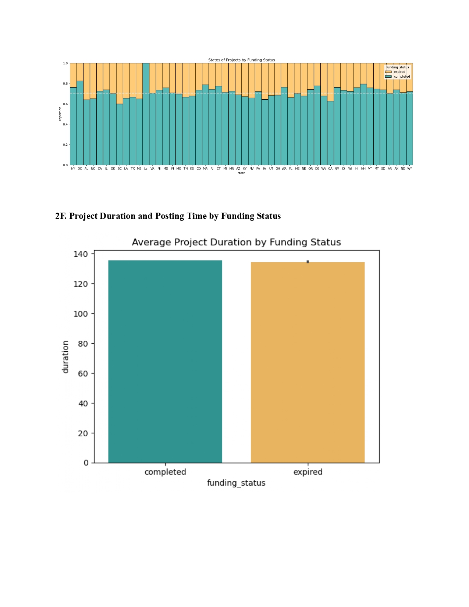

DonorsChoose
Using Python to analyze business data
Completed as a final project for Cornell's NBA 6215: Introduction to Python for Business course in Fall 2024, this project involved analyzing data from DonorsChoose, a nonprofit organization that connects teachers in high-need communities with donors who want to help. The goal was to identify trends in donor characteristics and to provide insights on factors related to campaign success.


